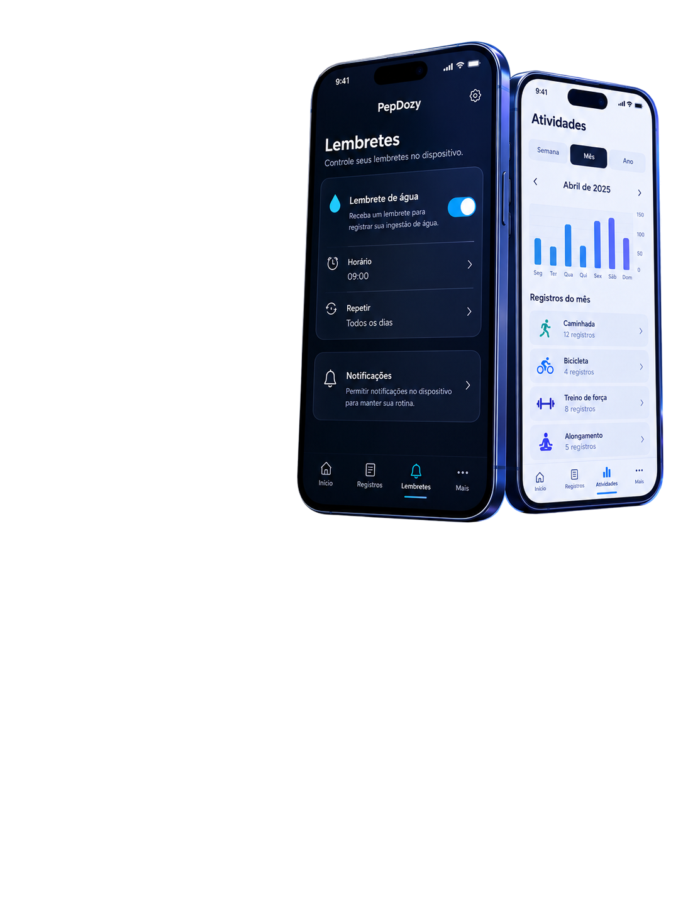

Descreva o problema
Informe a função, o que tentou e o que aconteceu.
 PepDozy™: GLP-1
PepDozy™: GLP-1
Canal oficial
Relate problemas de uso sem enviar informações clínicas ou documentos pessoais.
E-mail: cabralmoreirao23@icloud.com
Este canal trata de funcionamento do aplicativo. Ele não oferece orientação médica, nutricional ou farmacêutica.
Feche e abra o aplicativo uma vez. Se a falha envolver assinatura, confirme que o iPhone está conectado à internet, que a Conta Apple está disponível e toque em Restaurar compras.
Não envie senha, código 2FA, dados bancários, CPF, exames, doses, fotografias clínicas, backup, relatório ou qualquer registro de saúde.

Informe a função, o que tentou e o que aconteceu.
Não envie dados de saúde, senhas ou documentos pessoais.
Produtos, preços, ofertas e transações são administrados pela Apple. O preço e a moeda válidos são os exibidos pela App Store no momento da compra. Para cancelar ou alterar uma assinatura, use os Ajustes da Conta Apple.
Se uma assinatura ativa não aparecer no app, use Restaurar compras com a mesma Conta Apple usada na compra e informe ao suporte apenas o texto do erro, sem enviar recibos completos ou dados de pagamento.
Os registros ficam no aparelho. Antes de desinstalar, trocar de iPhone ou realizar uma restauração do sistema:
O suporte não tem acesso aos registros guardados no iPhone. Para consultar, exportar ou apagar dados, use as funções do próprio aplicativo. Consulte a Política de Privacidade.
O PepDozy™ registra informações e mostra estimativas educativas; não recomenda tratamento. Em caso de reação grave, urgência ou dúvida clínica, procure imediatamente um serviço de saúde ou o profissional responsável pelo seu tratamento.